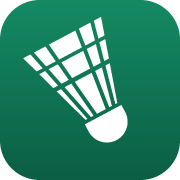

Nagoya Badminton
Open the personal link you were given. It looks like …github.io/…/#a=…&k=…
The link is kept on this device only. Do not share it — anyone with it can book on the shared account.

Open the personal link you were given. It looks like …github.io/…/#a=…&k=…
The link is kept on this device only. Do not share it — anyone with it can book on the shared account.